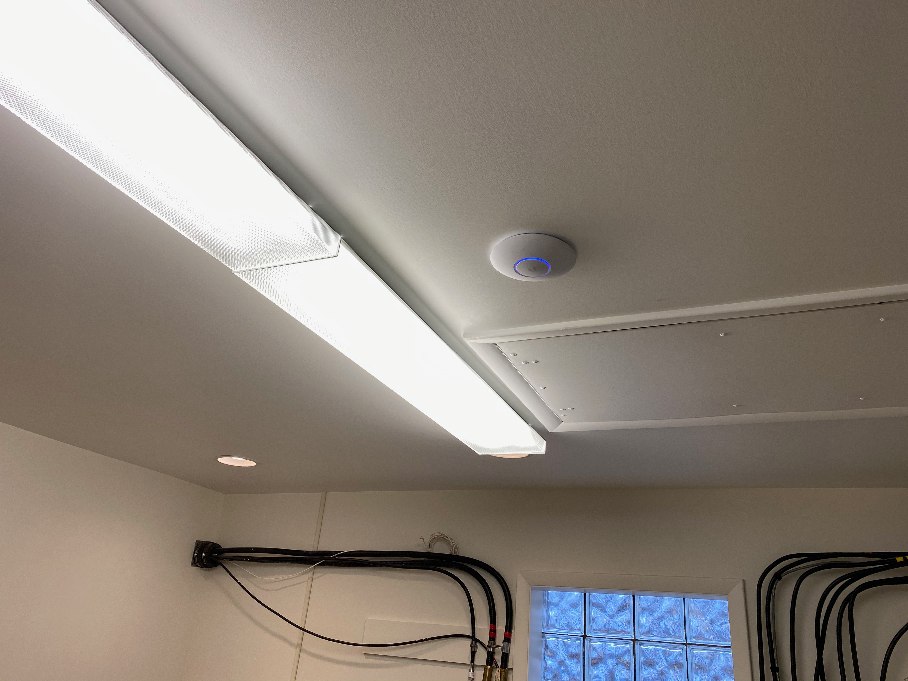
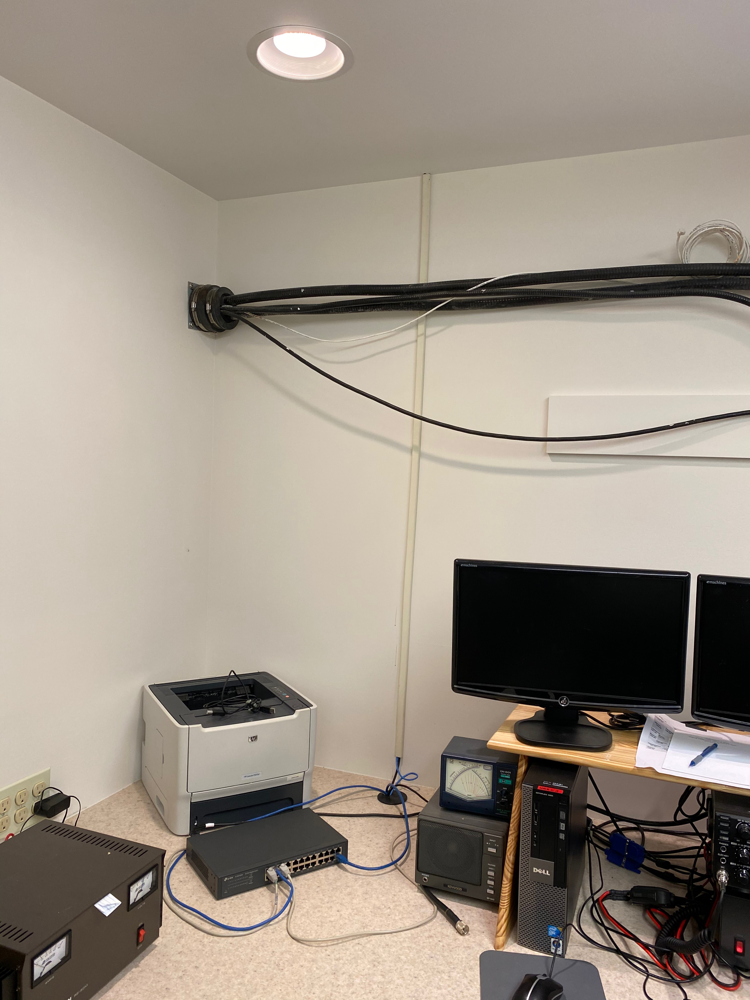
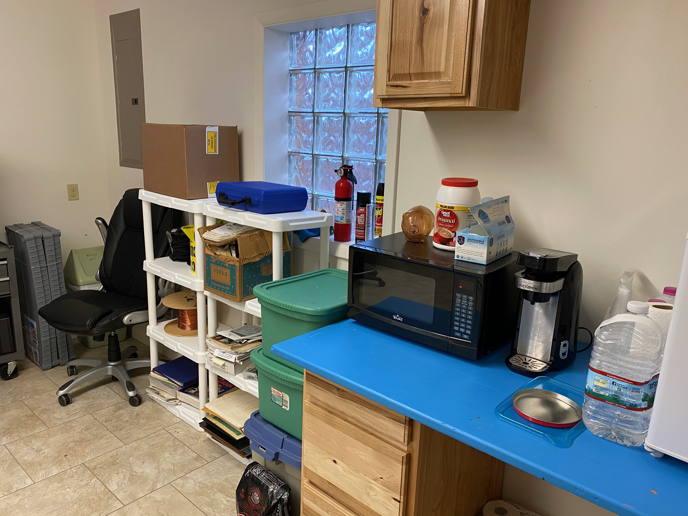
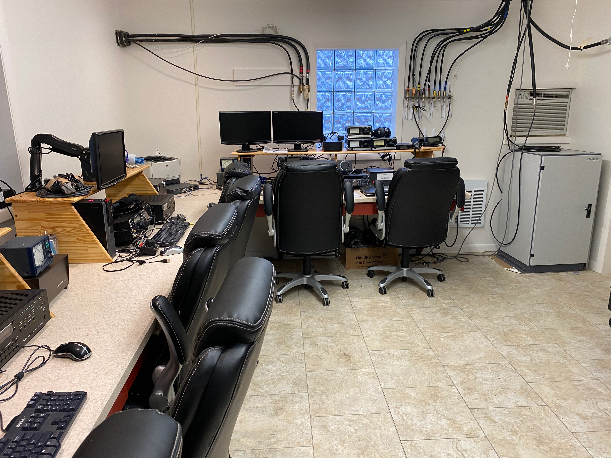
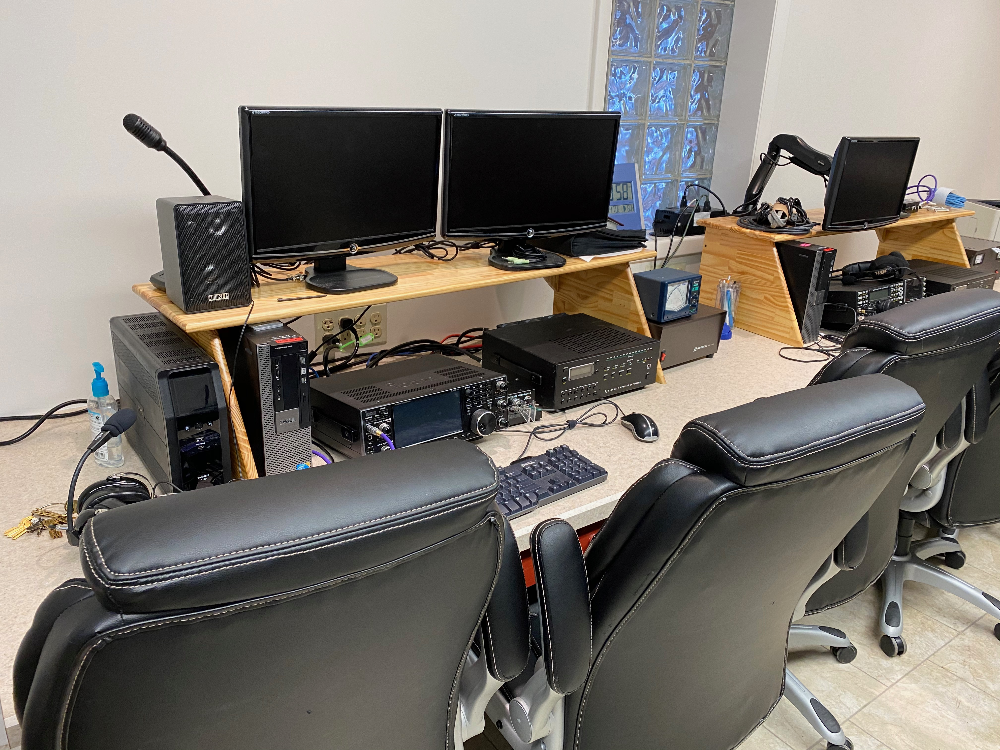
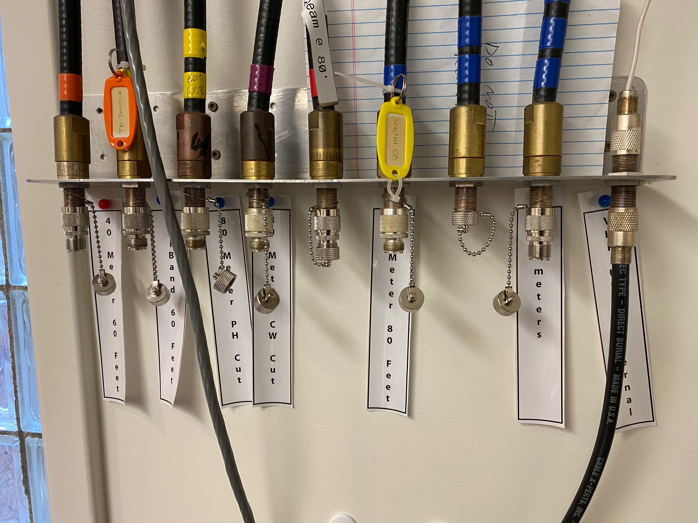

- Work day (K3ROG, W3EDP, W0LO)
- Wifi installation
- Additional shelving
- Work day (K3ROG, N3LI, NK8Q, KM3AJ, KR3ORY)
- Reinstallation of 40m dipole on 60’ west tower
- Repair of 160m dipole on 80’ north tower
- Store 2m & 70cm Yagi’s from satellite station
2020-11-24 17:12:38
Recent activities








Possible future clubhouse use
- November 28-29 • CQ WW DX CW
- December 4-6 • ARRL 160m
Deferred repairs
- Order replacement parts for downed Yagi
- Reinstall on 80’ north tower
- Tower & rotator maintenance
- 60’ west tower
- 80’ middle/south tower
- Consider replacing 2m Yagi
- 80’ north tower
Under consideration
- Research rotators & controller replacements
- Goal: Computer-controlled rotation of antennas
- Replace keyed lock with keyless
- Run 2nd coax lines to NARC-1 and NARC-2 to take advantage of dual receivers in both rigs
- Reposition 40m dipoles to enlarge angle between them
- Retune 40m dipole for CW/digital portion
Computer replacement proposal
- Request spending authority for a maximum of $4,000
- Windows 10 Pro
- Larger monitor
- Replace four computers + monitors + accessories
- NARC1 (IC-7610), NARC2 (Elecraft K3S), NARC3 (IC-9100), packet station
- Used at shack + Field Day